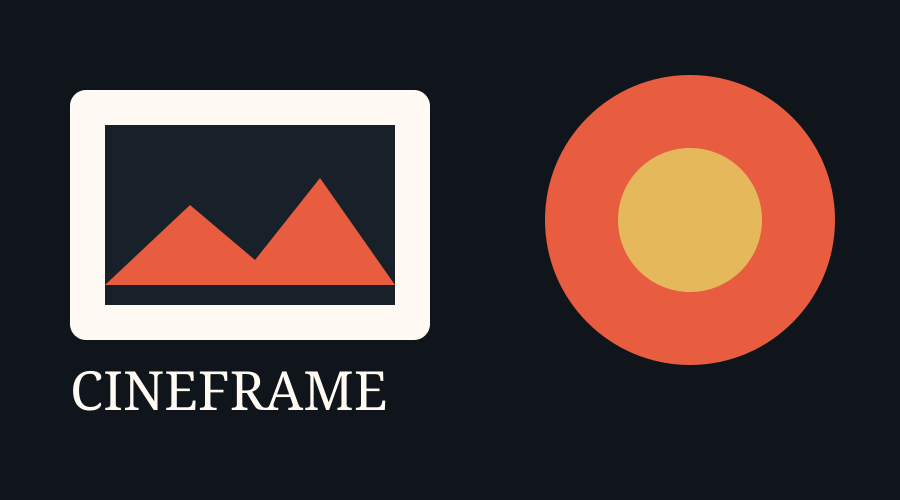

01 · Preproducción
Planear
Idea, guion, referencias, storyboard, locaciones, equipo, presupuesto y calendario.
Un proyecto audiovisual necesita creatividad, pero también organización. Las tres etapas principales permiten pasar de una intención a una pieza terminada.

Idea, guion, referencias, storyboard, locaciones, equipo, presupuesto y calendario.

Dirección, fotografía, sonido, actuación y coordinación de todo lo que sucede frente y detrás de cámara.

Selección de material, montaje, color, diseño sonoro, música, gráficos y exportación.
La producción no es una línea completamente rígida: muchas decisiones se revisan durante el proceso. Lo importante es mantener claro el objetivo de comunicación para que las elecciones técnicas y creativas trabajen en la misma dirección.